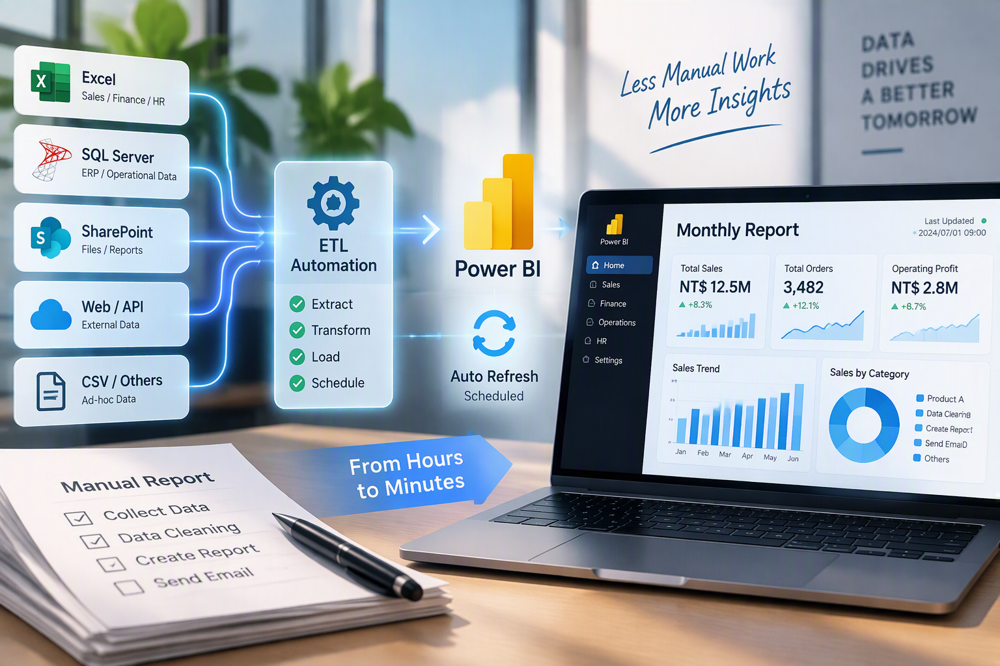

01已完成
Automation · Data & BI
月報表整合與自動化優化
整合多元資料來源並建立 Power BI 自動更新流程，降低月初報表製作的重複性人工作業。

PROJECT 01 IMAGE
專案背景
既有月報表的資料來源分散，包含地端檔案、系統資料及人工維護的 Excel，導致每月初需投入大量時間進行資料蒐集、整理與更新。
問題與需求
資料來源多元且缺乏一致的整合方式；每月需重複整理與更新，也增加資料定義確認及人工作業成本。
需求分析
整合不同資料來源、釐清指標與資料定義，並建立可定期自動更新的報表流程。
解決方法
整理既有流程 → 釐清欄位定義、統計邏輯與資料區間 → 將 SharePoint、SQL Server 等資料整合至 Power BI → 設定排程更新 → 讓 Excel 串接 Power BI 資料並一鍵更新。
專案成果
完成主要資料來源整合與自動更新流程，減少月報表製作中的重複性人工操作。
後續優化
規劃以 Python 建立 RPA 流程，自動產製報表並於指定時間寄送或通知。